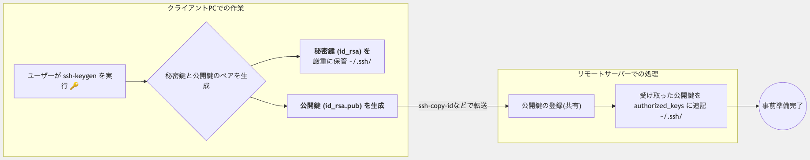
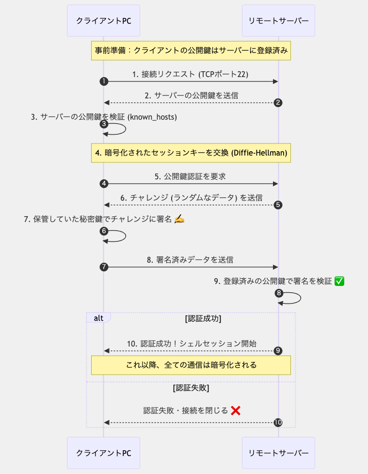
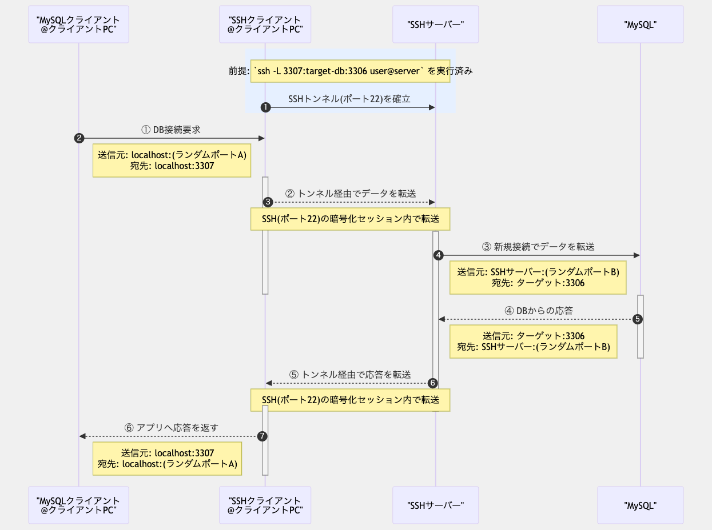
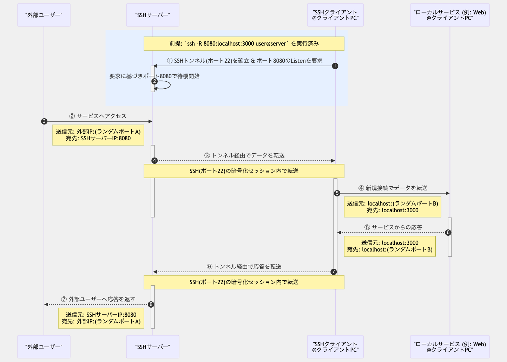
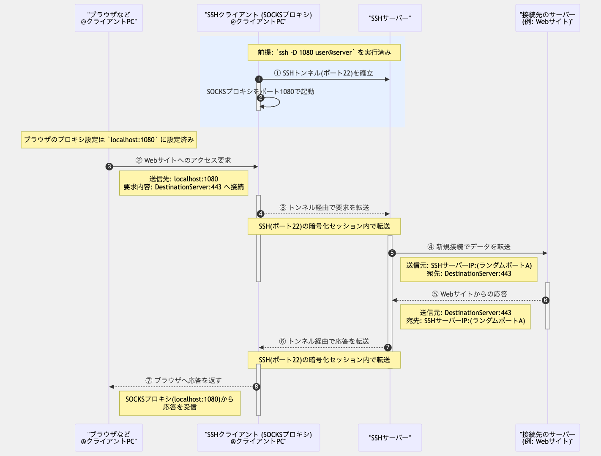

SSH（Secure Shell）は、ネットワーク上のコンピュータ間で安全に通信するためのプロトコルです。 特にリモートサーバーへの安全なログインやファイル転送、リモートコマンド実行などに広く使用されています。
このページでは、SSHの基本的な仕組みから、SSH鍵の生成方法、そして実際の応用例としてローカルPCとGitHubの連携方法まで詳しく解説します。 これらの知識を身につけることで、より安全で効率的なリモート操作やバージョン管理が可能になります。
SSH（Secure Shell）は、ネットワーク上で安全にデータ通信を行うためのプロトコルです。 1995年にフィンランドの研究者タトゥ・イローネンによって開発され、当時広く使われていた安全でないプロトコル（Telnet、rlogin、rshなど）の代替として普及しました。
SSHの主な特徴：
現在、SSHはサーバー管理、クラウドサービス、バージョン管理システム（Git）など、多くの場面で不可欠なツールとなっています。
SSHでは、主に以下の2つの認証方式が使用されています：
公開鍵認証は、セキュリティと利便性の両面で優れているため、多くの場面で推奨されています。 この認証方式では、以下のような流れで認証が行われます：
~/.ssh/authorized_keysファイルに登録しますこの方式の主な利点は、パスワードをネットワーク上で送信する必要がなく、また秘密鍵がローカルマシンに保存されるため、 サーバー側のデータベースが侵害されても認証情報が漏洩しないことです。
SSH鍵には、使用する暗号アルゴリズムによっていくつかの種類があります：
新しいシステムでは、Ed25519またはRSA（4096ビット）の使用が一般的に推奨されています。 ただし、接続先のサーバーやサービスがサポートしている鍵タイプを確認する必要があります。
SSH鍵の生成は、通常ssh-keygenコマンドを使用して行います。
以下に、主要なプラットフォームでのSSH鍵生成方法を示します：
ターミナルを開き、以下のコマンドを実行します：
# Ed25519鍵の生成（推奨）
ssh-keygen -t ed25519 -C "your_email@example.com"
# または、RSA 4096ビット鍵の生成
ssh-keygen -t rsa -b 4096 -C "your_email@example.com"
コマンド実行後、以下のプロンプトが表示されます：
~/.ssh/id_ed25519または~/.ssh/id_rsa）
Windows環境では、Git BashまたはWSL（Windows Subsystem for Linux）を使用して、 上記と同じコマンドでSSH鍵を生成できます。
Windows 10以降では、PowerShellでも以下のコマンドでSSH鍵を生成できます：
# Ed25519鍵の生成
ssh-keygen -t ed25519 -C "your_email@example.com"
# または、RSA 4096ビット鍵の生成
ssh-keygen -t rsa -b 4096 -C "your_email@example.com"
鍵が正常に生成されたことを確認するには、以下のコマンドを実行します：
# 秘密鍵と公開鍵の一覧を表示
ls -la ~/.ssh
生成された鍵ファイルは以下の通りです：
id_ed25519またはid_rsa: 秘密鍵（絶対に共有しないでください）id_ed25519.pubまたはid_rsa.pub: 公開鍵（リモートサーバーに登録します）SSH鍵を安全に管理するためのベストプラクティス：
SSH-Agentを使用すると、一度パスフレーズを入力するだけで、以降の接続では自動的に認証が行われます：
# SSH-Agentの起動
eval "$(ssh-agent -s)"
# 鍵の追加
ssh-add ~/.ssh/id_ed25519
macOSでは、キーチェーンにパスフレーズを保存することもできます：
# ~/.ssh/config ファイルに以下を追加
Host *
UseKeychain yes
AddKeysToAgent yes
IdentityFile ~/.ssh/id_ed25519
SSH接続を確立するためには、クライアントPCとリモートサーバー間で適切な設定を行う必要があります。 ここでは、公開鍵認証を使用したSSH接続の設定手順を説明します。
SSH接続の設定は、大きく分けて以下の2つのステップで行われます：
以下の図は、SSH接続の設定プロセスを示しています：

まず、クライアントPC（ローカルマシン）で以下の手順を実行します：
ssh-keygenコマンドを使用して秘密鍵と公開鍵のペアを生成します
id_ed25519やid_rsaなど）は、~/.ssh/ディレクトリに保存され、適切なパーミッション（600）で保護されます
id_ed25519.pubやid_rsa.pubなど）は、リモートサーバーに転送する準備をします
次に、生成した公開鍵をリモートサーバーに登録します。これには主に以下の方法があります：
ssh-copy-idコマンドを使用すると、公開鍵の転送と登録を一度に行うことができます：
# 基本的な使用方法
ssh-copy-id username@remote-server
# 特定の鍵ファイルを指定する場合
ssh-copy-id -i ~/.ssh/id_ed25519.pub username@remote-server
このコマンドは、指定した公開鍵をリモートサーバーの~/.ssh/authorized_keysファイルに追加します。
初回接続時はパスワード認証が必要ですが、一度設定すれば以降はパスワード不要で接続できるようになります。
ssh-copy-idが利用できない環境では、以下の手順で手動設定が可能です：
# 公開鍵の内容を表示してコピー
cat ~/.ssh/id_ed25519.pub
# リモートサーバーにSSH接続（パスワード認証）
ssh username@remote-server
# リモートサーバー上で以下のコマンドを実行
mkdir -p ~/.ssh
chmod 700 ~/.ssh
echo "コピーした公開鍵の内容" >> ~/.ssh/authorized_keys
chmod 600 ~/.ssh/authorized_keys
SCPを使用して公開鍵ファイルを転送し、その後リモートサーバーで設定することもできます：
# 公開鍵をリモートサーバーに転送
scp ~/.ssh/id_ed25519.pub username@remote-server:/tmp/
# リモートサーバーにSSH接続
ssh username@remote-server
# リモートサーバー上で以下のコマンドを実行
mkdir -p ~/.ssh
chmod 700 ~/.ssh
cat /tmp/id_ed25519.pub >> ~/.ssh/authorized_keys
chmod 600 ~/.ssh/authorized_keys
rm /tmp/id_ed25519.pub
公開鍵の登録が完了したら、パスワードなしでSSH接続できることを確認します：
ssh username@remote-server
パスワードの入力を求められずに接続できれば、設定は成功です。
もし接続に問題がある場合は、-vオプションを使用して詳細なデバッグ情報を確認できます：
ssh -v username@remote-server
SSH接続が確立される際、クライアントとサーバー間では複雑な認証プロセスが行われます。 ここでは、公開鍵認証を使用したSSH接続の詳細なプロセスを説明します。
以下の図は、SSH認証の一連の流れを示しています：

~/.ssh/known_hostsファイルと照合して検証します。初回接続時は鍵の指紋（フィンガープリント）を確認するプロンプトが表示されます
~/.ssh/authorized_keysに登録されている公開鍵を使用して、署名を検証します
認証が成功すると、クライアントとサーバー間のすべての通信は、確立されたセッションキーを使用して暗号化されます。 これにより、第三者による盗聴や改ざんから通信内容が保護されます。
SSH認証プロセスのセキュリティを高めるためのポイント：
/etc/ssh/sshd_configファイルで、パスワード認証の無効化や、rootログインの制限などのセキュリティ強化設定を行うことができます
known_hostsファイルは、SSHクライアントがリモートサーバーの身元を確認するために使用する重要なファイルです。
以下に、known_hostsファイルの管理に関する補足情報とTipsを紹介します。
~/.ssh/known_hosts（ユーザー固有）または/etc/ssh/ssh_known_hosts（システム全体）に保存されています
known_hostsファイルを効率的に管理するためのコマンド：
# 特定のホストの鍵を削除（ホストのIPやDNSが変更された場合など）
ssh-keygen -R hostname
# 特定のホストの鍵を事前に追加（スクリプトでの自動化に便利）
ssh-keyscan -H hostname >> ~/.ssh/known_hosts
# 特定のホストの鍵指紋を確認
ssh-keygen -l -F hostname
# known_hostsファイルのハッシュ化（セキュリティ向上）
ssh-keygen -H -f ~/.ssh/known_hosts
known_hostsファイルに関する一般的な問題と解決策：
ssh-keygen
-R hostnameで古い鍵を削除してから再接続します
~/.ssh/configにStrictHostKeyChecking=noを設定できますが、セキュリティ上のリスクがあるため本番環境では推奨されません
known_hostsファイルを定期的にバックアップして、誤って削除した場合に備えます
HashKnownHosts yesを~/.ssh/configに設定して、ホスト名をハッシュ化し、情報漏洩のリスクを減らします
/etc/ssh/ssh_known_hostsに信頼できるホストの鍵を追加して、すべてのユーザーが安全に接続できるようにします
~/.ssh/configファイルでのknown_hosts関連の設定：
Host *
# known_hostsファイルの場所を指定
UserKnownHostsFile ~/.ssh/known_hosts.d/default
# ホスト名のハッシュ化を有効化
HashKnownHosts yes
# 厳格なホスト鍵チェックの設定
# yes: 未知のホストに接続しない
# ask: 未知のホストに接続する前に確認する（デフォルト）
# no: 未知のホストに警告なしで接続（安全でない）
StrictHostKeyChecking ask
# 特定のホストに対して別のknown_hostsファイルを使用
Host example.com
UserKnownHostsFile ~/.ssh/known_hosts.d/example
SCPとSFTPは、SSHプロトコルを利用してファイルを安全に転送するためのツールです。 どちらもSSHの暗号化機能を活用しているため、インターネット上でのファイル転送を安全に行うことができます。
SCP（Secure Copy Protocol）は、SSHプロトコルを基にしたファイル転送プロトコルで、 ローカルマシンとリモートホスト間、または2つのリモートホスト間でファイルを安全にコピーするために使用されます。 SCPはコマンドラインツールとして実装されており、シンプルで効率的なファイル転送が可能です。
SCPの主な特徴：
SFTP（SSH File Transfer Protocol）は、SSHプロトコル上で動作するファイル転送プロトコルで、 SCPよりも多機能なファイル操作が可能です。SFTPはFTPに似た操作性を持ちながら、 SSHの暗号化と認証機能を利用して安全性を確保しています。
SFTPの主な特徴：
主な違いは以下の通りです：
SCPコマンドの基本的な構文と一般的な使用例を紹介します。
scp [オプション] ソース 宛先
ソースと宛先は、以下の形式で指定します：
[ユーザー名@]ホスト名:ファイルパス
ローカルファイルをリモートサーバーにコピー：
# 単一ファイルをリモートサーバーにコピー
scp local_file.txt username@remote_server:/path/to/destination/
# 複数ファイルをリモートサーバーにコピー
scp file1.txt file2.txt username@remote_server:/path/to/destination/
# ディレクトリをリモートサーバーにコピー（再帰的）
scp -r local_directory/ username@remote_server:/path/to/destination/
リモートサーバーからローカルにファイルをコピー：
# リモートファイルをローカルにコピー
scp username@remote_server:/path/to/remote_file.txt local_directory/
# リモートディレクトリをローカルにコピー（再帰的）
scp -r username@remote_server:/path/to/remote_directory/ local_directory/
リモートサーバー間でのファイルコピー：
# サーバー1からサーバー2へファイルをコピー
scp username1@server1:/path/to/file.txt username2@server2:/path/to/destination/
-r: ディレクトリを再帰的にコピーします-p: ファイルの修正時刻、アクセス時刻、パーミッションを保持します-P port: 指定したポート番号を使用します（デフォルトは22）-C: 転送中にデータを圧縮します-l limit: 帯域幅を制限します（KB/s）-q: 進行状況の表示を抑制します（静かモード）-v: 詳細な情報を表示します（冗長モード）圧縮を有効にして大きなファイルを転送：
scp -C large_file.zip username@remote_server:/path/to/destination/
非標準ポートを使用してファイルを転送：
scp -P 2222 file.txt username@remote_server:/path/to/destination/
帯域幅を制限してファイルを転送（他のネットワークトラフィックへの影響を減らす）：
scp -l 1000 large_file.zip username@remote_server:/path/to/destination/
SFTPの基本的な使用方法と一般的なコマンドを紹介します。
# リモートサーバーにSFTP接続
sftp username@remote_server
# 非標準ポートを使用してSFTP接続
sftp -P 2222 username@remote_server
接続が確立されると、SFTPプロンプト（sftp>）が表示され、
そこでSFTPコマンドを入力できます。
ファイル転送コマンド：
# リモートからローカルにファイルをダウンロード
get remote_file.txt [local_file.txt]
# 複数のファイルをダウンロード
mget *.txt
# ローカルからリモートにファイルをアップロード
put local_file.txt [remote_file.txt]
# 複数のファイルをアップロード
mput *.txt
# ディレクトリを再帰的にダウンロード
get -r remote_directory/
# ディレクトリを再帰的にアップロード
put -r local_directory/
ディレクトリ操作コマンド：
# 現在のリモートディレクトリを表示
pwd
# 現在のローカルディレクトリを表示
lpwd
# リモートディレクトリの内容を一覧表示
ls [directory]
# ローカルディレクトリの内容を一覧表示
lls [directory]
# リモートディレクトリを変更
cd remote_directory
# ローカルディレクトリを変更
lcd local_directory
# リモートディレクトリを作成
mkdir remote_directory
# ローカルディレクトリを作成
lmkdir local_directory
ファイル管理コマンド：
# リモートファイルの名前を変更または移動
rename old_name new_name
# リモートファイルを削除
rm remote_file
# リモートディレクトリを削除
rmdir remote_directory
# リモートファイルのパーミッションを変更
chmod 644 remote_file
# リモートファイルの所有者/グループを変更
chown user:group remote_file
その他のコマンド：
# ヘルプを表示
help
# SFTPセッションを終了
exit または bye または quit
SFTPコマンドをファイルにまとめて、バッチ処理することも可能です：
# コマンドファイルを作成
echo "cd /remote/directory
get file1.txt
get file2.txt
put local_file.txt
bye" > sftp_commands.txt
# コマンドファイルを実行
sftp -b sftp_commands.txt username@remote_server
コマンドラインのSFTPに加えて、グラフィカルなSFTPクライアントも多数あります：
SCPとSFTPを安全に使用するためのベストプラクティスと注意点を紹介します。
SCPとSFTP以外にも、安全なファイル転送のための代替手段があります：
OpenSSHの開発者は、SCPプロトコルの既知のセキュリティ問題により、SCPの使用を徐々に非推奨化し、 代わりにSFTPの使用を推奨しています。将来のOpenSSHバージョンでは、SCPコマンドはSFTPプロトコルを 内部的に使用するように変更される可能性があります。
GitHubでSSH接続を設定するには、以下の手順に従います：
# macOS
cat ~/.ssh/id_ed25519.pub | pbcopy
# Windows (PowerShell)
Get-Content ~/.ssh/id_ed25519.pub | Set-Clipboard
# Linux
cat ~/.ssh/id_ed25519.pub | xclip -selection clipboard
ssh -T git@github.com
初回接続時は、サーバーのフィンガープリントを確認するメッセージが表示されます。「yes」と入力して続行します。
接続が成功すると、以下のようなメッセージが表示されます：
Hi username! You've successfully authenticated, but GitHub does not provide shell access.
SSH接続を設定した後、GitHubリポジトリとの操作にSSHを使用する方法を説明します：
GitHubのリポジトリページで「Code」ボタンをクリックし、「SSH」タブを選択してURLをコピーします。 その後、以下のコマンドでリポジトリをクローンします：
git clone git@github.com:username/repository.git
HTTPSからSSHに変更する場合は、以下のコマンドを使用します：
# 現在のリモートURLを確認
git remote -v
# リモートURLをSSHに変更
git remote set-url origin git@github.com:username/repository.git
# 変更を確認
git remote -v
SSH接続が設定されていれば、通常のGitコマンドでパスワード入力なしにプッシュとプルが可能です：
# 変更をプッシュ
git push origin main
# 変更をプル
git pull origin main
GitHubとのSSH接続で問題が発生した場合の対処法：
ssh -T git@github.comコマンドが失敗する場合：
ssh -vT git@github.comを実行して詳細な情報を確認
ssh-add -lで現在ロードされている鍵を確認chmod 600
~/.ssh/id_ed25519）
「Permission denied (publickey)」エラーが表示される場合：
ssh -i ~/.ssh/id_ed25519 -T git@github.comで特定の鍵を指定してテスト
ssh-add -lで鍵がエージェントに追加されているか確認
X11転送（X11 Forwarding）は、SSHの機能の一つで、リモートサーバー上で実行されているグラフィカルアプリケーションの ディスプレイをローカルマシンに転送することができます。これにより、リモートサーバー上のGUIアプリケーションを ローカルマシンの画面上で操作することが可能になります。
X11は、Unix系システムで広く使用されているウィンドウシステムであるX Window Systemのプロトコルバージョン11を指します。 このプロトコルは、グラフィカルユーザーインターフェース（GUI）を提供するためのクライアント・サーバーモデルを採用しています。
X11転送の仕組み：
この機能は、リモートサーバー上のグラフィカルツールを使用する必要がある場合や、 リモートマシン上のアプリケーションの開発・デバッグを行う場合に非常に便利です。
X11転送を使用するには、クライアント側とサーバー側の両方で設定が必要です：
SSHサーバー（sshd）の設定ファイル（通常は/etc/ssh/sshd_config）で、X11転送を有効にします：
X11Forwarding yes
X11DisplayOffset 10
X11UseLocalhost yes
設定を変更した後は、SSHサービスを再起動する必要があります：
# Linuxの場合（systemd使用）
sudo systemctl restart sshd
# macOSの場合
sudo launchctl unload /System/Library/LaunchDaemons/ssh.plist
sudo launchctl load /System/Library/LaunchDaemons/ssh.plist
クライアント側のSSH設定ファイル（~/.ssh/config）に以下の設定を追加します：
Host *
ForwardX11 yes
ForwardX11Trusted yes
または、接続時に-Xまたは-Yオプションを使用することもできます：
-X: 基本的なX11転送を有効にします（セキュリティ制限あり）-Y: 信頼されたX11転送を有効にします（セキュリティ制限が少ない）X11転送を使用するには、以下のソフトウェアが必要です：
X11転送を使用したリモートアプリケーションの実行例を紹介します：
X11転送を有効にしてSSH接続：
# 基本的なX11転送
ssh -X username@remote-server
# 信頼されたX11転送
ssh -Y username@remote-server
接続後、リモートサーバー上でグラフィカルアプリケーションを起動します：
# シンプルなグラフィカルアプリケーションの例
xclock
xeyes
firefox
gedit
アプリケーションのウィンドウがローカルマシンの画面に表示されます。
X11転送は便利ですが、ネットワーク帯域幅を多く消費する場合があります。パフォーマンスを向上させるためのヒント：
ssh -XC username@remote-server（-Cオプションで圧縮を有効化）
X11転送は便利ですが、セキュリティ上の考慮事項があります：
-Yオプションはセキュリティ制限を緩和するため、信頼できるサーバーでのみ使用すべきです
-Yではなく-Xオプションを使用してください
X11転送がセキュリティ上の懸念がある場合、以下の代替手段を検討できます：
PORTフォワーディング（ポート転送/SSHトンネリングとも呼ばれる）は、SSHプロトコルを使用して、暗号化されたトンネルを通じてデータを転送する技術です。 これにより、通常はアクセスできないリソースへの安全なアクセスや、ファイアウォールを迂回した通信が可能になります。
PORTフォワーディングの主な利点：
PORTフォワーディングは、データベース管理、リモートデスクトップ接続、プライベートウェブブラウジングなど、様々な用途に活用されています。
主に以下の3つの種類があります：
ローカルポート転送は、ローカルマシンのポートをリモートサーバーのポートに転送します。 ローカルマシンで指定したポートに接続すると、その接続はSSHトンネルを通じてリモートサーバーの指定したポートに転送されます。
一般的な構文：
ssh -L local_port:destination_host:destination_port username@ssh_server
例えば、リモートデータベースサーバーに接続する場合：
# ローカルの3307ポートからリモートサーバーのMySQLポート(3306)に接続
ssh -L 3307:localhost:3306 username@remote-server
この設定後、ローカルマシンでlocalhost:3307に接続すると、その接続はリモートサーバーのlocalhost:3306に転送されます。

リモートポート転送は、リモートサーバーのポートをローカルマシンのポートに転送します。 これは、ローカルポート転送とは逆方向の転送で、インターネットからローカルマシンのサービスにアクセスする場合などに使用します。
一般的な構文：
ssh -R remote_port:destination_host:destination_port username@ssh_server
例えば、ローカルで実行しているウェブサーバーをリモートから利用可能にする場合：
# リモートサーバーの8080ポートからローカルのウェブサーバー(3000ポート)に接続
ssh -R 8080:localhost:3000 username@remote-server
この設定後、リモートサーバーでlocalhost:8080に接続すると、その接続はローカルマシンのlocalhost:80に転送されます。

動的ポート転送は、SOCKSプロキシを設定し、複数の宛先へのトラフィックをSSHトンネルを通じて転送します。 これは、ウェブブラウジングやその他のアプリケーションのトラフィック全体をトンネリングする場合に便利です。
一般的な構文：
ssh -D local_port username@ssh_server
例えば、ローカルの1080ポートにSOCKSプロキシを設定する場合：
# ローカルの1080ポートにSOCKSプロキシを設定
ssh -D 1080 username@remote-server
この設定後、ブラウザやその他のアプリケーションでSOCKSプロキシとしてlocalhost:1080を指定すると、
すべてのトラフィックがSSHトンネルを通じてリモートサーバーから発信されるようになります。

PORTフォワーディングは安全な通信手段ですが、適切に設定・管理しないとセキュリティリスクが生じる可能性があります：
localhostではなく0.0.0.0（すべてのインターフェース）にバインドすると、意図しないアクセスを許可してしまう可能性があります
localhostにのみバインドします
SSHサーバー（/etc/ssh/sshd_config）でポート転送を制御するための設定：
# すべてのポート転送を許可/禁止
AllowTcpForwarding yes/no
# ローカルポート転送のみ許可
AllowTcpForwarding local
# リモートポート転送を許可/禁止
GatewayPorts yes/no
# 特定のユーザーやグループに対する制限
Match User username
AllowTcpForwarding yes
PermitOpen localhost:3306 localhost:5432
これらの設定を変更した後は、SSHサービスを再起動する必要があります。
SSHをより安全に使用するためのベストプラクティス：
SSHを使用する際によく発生する問題とその解決策：
~/.ssh/known_hostsファイルから該当エントリを削除
~/.ssh/configにServerAliveIntervalとServerAliveCountMaxを設定
~/.sshディレクトリと鍵ファイルのパーミッションを確認（ディレクトリは700、秘密鍵は600）
~/.ssh/configファイルで、ホストごとに使用する鍵を指定
-Xまたは-Yオプションを使用し、必要なパッケージがインストールされていることを確認